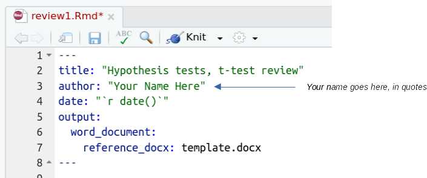
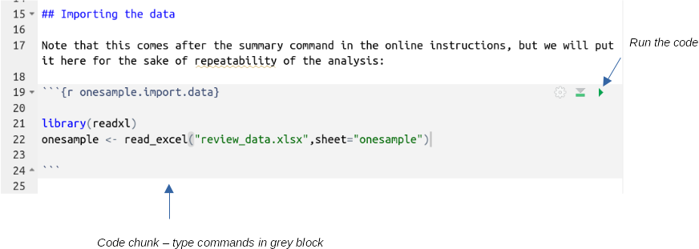
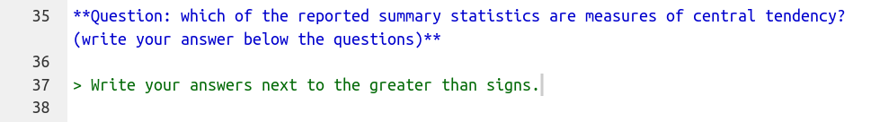
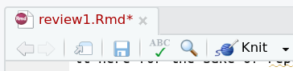
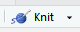

Assuming that you might have forgotten a thing or two from your intro stats classes, we will spend some time reviewing what you need to know to be prepared for this class. This will both help you recall the how and why of statistical analysis, as well as giving you a chance to begin learning to use R, the statistical package we will use for the rest of the semester. The procedures we will cover today are:
| Procedure | Purpose | Data type |
|---|---|---|
| One-sample t-test | Compare a single mean to a specified value | Numerical (continuous) |
| Two-sample
t-test, paired t-test |
Compare means between two independent sets of observations | Numerical (continuous) response, categorical grouping variable |
| Paired t-test | Compare mean of differences between two logically paired set of observations to 0 | Differences between pairs of numerical (continuous) measurements |
The hyperlinks for each procedure take you to background material we use in Biol 215 - please read through them to refresh your memory.
Next week we will be reviewing one-way ANOVA and simple linear regression, and you can find Biol 215 material at the links for those topics.
If you need further review, have a look at this information on: variable types, accuracy and precision of data, graphical summary of data, numerical summary of data, probability, normal distributions, estimates from samples and confidence intervals, and transformations.
The following are additional Biol 215 materials that you won't need to review for this class, but are made available to you here for the sake of completeness, if you wish to review them: nonparametric statistics, correlation analysis, Chi-square goodness of fit, and Chi-square contingency table analysis.
Before we get underway, we will want to make use of your OneDrive for all class files. Storing class files in OneDrive will make them accessible whether you work from home through Citrix, or using a locally-installed version of R Studio, or on campus.
To make OneDrive files available to programs that run through Citrix we first need to go to https://kumo.csusm.edu/ and log in with your campus username and password. Then, find "OneDrive - CSUSM" and drop down its menu and select "Authorize" - you should now be able to access any files stored in your OneDrive from any computer on campus, through programs run through CougarApps, and if you have OneDrive installed on your computer at home you can access them there as well.
You only need to use kumo once, so once this is done you shouldn't have to do it again all semester (if you already did it previously you don't need to do it again).
A little background on R
The statistical package we are using for this class, called "R", is free of charge. The reason for this is interesting, and before we start on the exercise, you should know a little about the software.
R is an "open source" implementation of the S+ statistical computing language, and is available for several different computing platforms (Windows, Mac OS, Linux and other UNIX-like operating systems). Open source software is developed in a collaborative way by teams of programmers, often on a volunteer basis. There are many reasons that programmers choose to participate in open source projects (some are paid, some do it for personal satisfaction, etc.), but from a user's perspective there are several practical advantages to using open source software, such as:
- The "source code" written by the programmers can be reviewed by other programmers, or even by users if they know how, which provides a form of peer review for the code. Peer review is an important quality control mechanism in scientific work, and it has the same benefits in software development.
- Openness in the development process promotes a cooperative attitude in the users, which can lead to a tremendous amount of contributed code; the benefit of this becomes obvious both through R's impressive feature set, as well the huge number of contributed extensions that allow R to perform some very specialized types of data analysis. You can see the list of available add-on packages here, grouped by the type of problem the add-on is useful for addressing. You will find contributed packages that do anything from estimating home range sizes from animal point locations, to analysis of genomics experiments. As of this writing there are over 10,000 contributed packages available, and it is likely that whatever analysis task you encounter there will be at least one package that can perform the analysis you need.
- Open source software generally embraces open standards, including open file formats. Because of this, you will not have your data locked in a file format that can only be opened if you continue to license a particular software package. For example, if you entered all your data into a system that CSUSM licensed (we'll call it DataAnalytica), and then they let the license lapse because it was too expensive, you may not be able to open your own data files again unless you paid for a licensed copy of DataAnalytica yourself. With open data file formats any software developer can write an import filter that can open the file, so you would be free to move to another software platform without losing your data.
- Because the code is contributed for free, open source software is usually distributed free of charge, which is true of R.
R is a flexible, comprehensive platform for statistical analysis and graphics. It is extremely powerful, but by itself it is not user friendly. To make it friendlier and more efficient to use, we will use a second program as our interface to access R, and to make it much easier to learn and to use for real work.
A kinder, gentler interface
If you were to download R by itself, install and launch it, you will see a program that looks like this (on Windows). The "R Console" is where commands are issued, and the graphical user interface (or GUI) that is distributed is very rudimentary - there are no menus for running statistical analyses or making graphs like you get with MINITAB, and all of the menu selections and buttons are for opening and saving R's "workspaces", printing output, or managing add-on packages.
{kind=link}
There are GUI's that have been developed for R that make it run more like MINITAB, but they can be limiting - particularly later in the semester when we learn about model-based inference we will make good use of R's commands to run multiple analyses that have only slightly different code, which is much more efficient with written commands than with a menu-based GUI. If you're going to use R, it's good to learn to write R code.
However, R by itself has some limitations that make it hard to use, particularly for complex analysis tasks. Instead of using a full-blown graphical interface, we will be using an integrated development environment (or IDE) designed specifically for R, called R Studio. R Studio is not a graphical interface to R's statistical analysis, we will still need to write code to use it, but it is a graphical interface to such useful things as accessing help files, browsing for and importing data files, managing graphs, and editing R commands. It also helps organize and document your work, and using it makes it possible to spot and revise errors (and in particular, using it along with the R markdown file format, it makes it very easy for you to share your work with me so I can help you spot errors). It is the tool I use in my own work, and it is well worth the effort to learn.
Starting R Studio and importing your first data set
Find R Studio in the Start menu, and launch it. You will see a window that looks like this:
If you move your mouse over the picture above you'll see popups that indicate the location of the:
- Console - where R commands are entered, and output is displayed
- Menu bar - where the File menu is found (and other menus that we will learn about as needed)
- The Project menu - where projects can be created, opened, or closed
- Environment tab - where all the objects in our workspace will be displayed. The environment is active working space, in computer memory.
- History tab - a list of the commands used, which can be selected and re-used
- Files tab - where the files in the current working directory are displayed. These are files stored on disk, rather than being loaded in computer memory. We would need to load a data file from disk into memory for it to appear in the Environment, and to be usable by R.
- Plots tab - where any graphs we make will be viewed (and from where they can be exported)
- Packages tab - where add-on packages that are currently installed can be loaded for use
- Help tab - where help files can be searched and viewed
The first thing we will do is to make a new project for this exercise - this will be the first thing you do for each week's exercise, so this is the first of many!
Start a new project for this exercise
One of the best reasons to use R Studio is that it makes management of your work in R much easier. An excellent example of that is in its management of your R session. All of the data you import, and any results that you assign to "objects" within R will be saved in an R "workspace", which is a file that is saved to disk, usually called .RData (note the period before the R). R will also save a history file, called .Rhistory, that contains all the commands you issued (including the mistakes!). However, all the other things that you create, such as your statistical output and graphs, do not get saved by R. To (partially) fix this, R Studio uses "projects", which are folders that contain everything you are working on in your R session, as well as a project file that keeps track of the state of your R Studio session the last time you saved it. When you open a project file, you will see your session in the state you last saved it, so that you can pick up where you left off. There are still some things that are not saved (the output and graphs, for example), but we will enter all of our commands into a file that can be run to reproduce all of the output easily.
To make a new project, do the following:
- Select "File" → "New Project..."
- In the "Create Project" window, select "New Directory".
- In the "Project Type" window select "New Project".
- In the "Create New Project" window we will name the new folder (a.k.a. directory) that will contain our project:
- Enter "review1" as the directory name.
- We also need to set the folder that we will use for all the projects you make in class, so click on "Browse" and navigate to your OneDrive. Make a folder in OneDrive for this class (with the "New folder" button - name the folder "Biol531"), and then select Biol531 as the folder that will hold your new project.
- Click "Create Project" to create the new project.
Once you're done you'll see that the Environment tab is blank, except for a gray "Environment is empty" label, and the "Files" tab shows a review1.Rproj file, which is the new project file that R Studio just created. The thin status bar just above the "Name" label shows that you are looking at the contents of the new folder you just created on your OneDrive. This is your "working directory", which R will use for output files, and where it will look for any input files unless you tell it otherwise.
Add a "R Markdown" file template to your project
We will be using something called "markdown" to record our work. Even with an RStudio project we would lose the output from our commands, including test results and graphs, each time we exited RStudio. We can avoid that by recording what we do in a file that uses R's version of markdown, which is a text formatting language (if you have ever done any Web development you've used HTML, which is short for hypertext markup language, which gives instructions for how to assemble a document using tags. Markdown is a simplified version of a markup language). The advantage of R markdown is that we can embed chunks of R code, which can be executed to obtain output, and we can annotate the code and output in a way that helps us remember what we did and why. If you discover an error you can find the code chunk containing the error, fix it, and then execute any additional code chunks to fix any output that was affected by the error.
I will be providing you with templates of R markdown documents for each exercise - this week's file is called "review1.Rmd", and is here. Download it and put it into your working directory.
Once it's in your working directory, find the file in the "Files" tab of R Studio, and click on it to open it. You will see a series of instructions, explanations, and questions with "code chunk" boxes where you will enter your R commands. The first thing you can do is to enter your name -replace "Your Name Here" with your own name, inside the quotes. Don't edit anything else in this block, the date will get added when you "knit" the file into a Word document.
R commands go into code chunks, which are gray blocks between a line that starts with ```{r label}, and ends with ```, like so:
Once you have one or more lines of code in a chunk you can run it by hitting the green run button. The output will appear beneath the code chunks when they are executed if the command produces output (this example imports the data and puts it into an object called onesample, so it would not produce output).
Questions are delimited with formatting symbols (**) that will make them render as bold italics, and below the questions there is a greater than sign (>) where your answers should go so that they will be rendered as block quotes, like so:
When you're done filling in the code chunks and answering the questions you will "knit" the markdown document into a Microsoft Word file, which will be a nicely formatted version of your document. It is this Word document you will upload to complete the assignment. The knit button is just under and to the right of the Rmd file's name, like so:
Note: sometimes there will be commands you just need to try out and practice with, but aren't needed to answer the questions - I will tell you to enter those in the console. Every command should tell you whether to use the console or a code chunk, and most tell you which code chunk to use. Pay attention to where you're being directed to enter the commands so that you don't lose any work!
If you then click on the "save" icon (the tiny floppy disk above the title) your changes will be saved in the review1.Rmd file.
Import the data into R
To get data into R for use, you need to download this file, called review_data.xlsx, into your project folder. Then, you can put the following command into your R markdown file (in the code chunk labeled "onesample.import.data", above the summary chunk you just completed):
library(readxl)
onesample <- read_excel("review_data.xlsx", sheet = "onesample")
and execute it with the run button. You should now have an object called onesample in your Environment tab. The command we are using is called read_excel(), and it is found in an extension package (called a "library" in R terminology) called "readxl". We first load the library, and then use the read_excel() command within it to import the file. The review_data.xlsx file actually has five worksheets in it, called onesample, twosample, paired, anova, and regression, so we need to use sheet = "onesample" to let R know which sheet to import. The little makeshift arrow formed by the less than symbol and a dash is an assignment operator, which takes the output of read_excel() and assigns it to a new data set object we are calling onesample.
Fair warning: do not just copy and paste commands from this page into R
At this point some of you clever students may have already realized that you can just copy commands from these web pages into R and save yourself all kinds of time. The temptation to do this is great, but bear in mind that when you have to analyze data on your own this method won't be available, and R is fussy about command syntax. If you don't get any practice entering commands (and interpreting the often cryptic and unhelpful error messages R gives you when you make a mistake) you will have trouble when the time comes for you to do it on your own when I'm not available to help you (for example, on exams). Take your time and practice typing commands now, it's good for you.
Objects and functions
We are using R to statistically analyze our data, but it is also an object-oriented programming language. Object-oriented programming refers to an approach to writing computer programs that attempts to mimic the way that we interact with physical objects. Real, physical objects have properties that define them (volume, shape, mass). When we want to accomplish a task, the way we accomplish the same task is different depending on the type of object we'll use - for example, if we want to go to Los Angeles we will drive if we have a car, and will fly if we have a helicopter. Object orientation means that when we make a data set in R it has properties and methods. Properties are the characteristics of the data set, such as the number of rows and columns and their data types. Methods are the way a task is accomplished for that object type.
To interact with an object, like our onesample data set, we can use functions. Most functions take arguments that tell them what to operate on and set options for how to operate, and all functions return results. A function in R will have a name followed by parentheses with no spaces between the name and the left (open) parenthesis. Functions will often have default settings for their arguments, and if the default settings are what you want you can accept them by leaving the arguments blank. For example, the ls() function is used to list the contents of a workspace, and if you just want to list the contents of the current workspace (the default) you just need to type (at the > prompt in the console):
ls()
and you'll see the output:
[1] "onesample"
The [1] is an index number that tells us that onesample is the first (and in this case, only) object in the workspace (listed alphabetically).
We will use functions on our onesample object as well - to get a statistical summary of the body temperature in onesample, use the command:
summary(onesample)
which will display a summary in the Console window. You'll see that we use the same summary() command on different types of objects throughout the semester, and the same command produces different results for a data set than it does for other types of objects, because each type of object has its own summary method that it executes when summary() is used on it.
One of the nice features of R Studio that you'll notice as you type this command is code completion. As you type R Studio will match what you've written already to lists of possible command and will give you a pop-up list of commands to choose from. If you select the command you want from the list (with up and down arrow keys) and then hit the TAB key the selection will be entered for you. This works with names of objects, and names of variables within objects as well. I recommend you take advantage of this feature, because one of the biggest frustrations in learning to use R is that it is very fussy about spelling, capitalization, and syntax of commands, and using code completion will help you avoid typos.
Put this summary() command in the onesample.summary code chunk of your Rmd file.
One-sample t-test
To review one-sample t-tests, you will test whether body temperature is different from 98.6 degrees. Imagine these data represent a set of body temperature measurements from a group of CSUSM students. Because you have a single sample of data, with a single mean body temperature, you will compare the mean of the data to a hypothetical value you specify using a one-sample t-test.
1. Check the assumptions of the test. If you recall, a one-sample t-test assumes that the data are normally distributed. We can check this using the Shapiro-Wilk normality test - it assumes the data are normally distributed as the null hypothesis, so a p-value over 0.05 indicates normality. Enter the following in your R markdown file, in the onesample.normality code chunk:
shapiro.test(onesample$Body.temperature)
The command is shapiro.test(), and it takes one argument, which is the variable that we want to test for normality. Note that we had to tell R both which data set to use, and which variable to use - if you tried shapiro.test(onesample) it would not work, even though there is only one variable, and if you tried shapiro.test(Body.temperature) it would not work because R wouldn't know which data set contained this variable, even though there is only one in the workspace. R is very literal.
You'll see from the output of shapiro.test() that p is 0.1131, so we pass the normality assumption.
This style of referring to a column in a data set - with the name of the data set followed by the name of the variable, separated by a dollar sign - is common, but not the only way available. We can refer to parts of a data set with a [row, column] index instead, like so (enter this in the console):
shapiro.test(onesample[ , 1])
Leaving the row number blank tells R to use all of the rows, but the 1 in the column index tells R to use the first column in onesample for the test. Finally, we can use the with() command to identify the data set, and then nest the shapiro.test() command within it, like so (in the console):
with(onesample, shapiro.test(Body.temperature))
I personally prefer the first or third method, because it makes the commands easier to understand.
2. Before conducting a one-sample t-test, look at your data! A good choice for small to medium sized data sets (100 observations or less) is a "dot plot", which plots the individual data points and stacks them up when they have the same data value (very much like a histogram, but with more detail preserved).
R has base graphics that handle a lot of the graphing tasks we would want to do, but more recently an add-on library called ggplot2 has been developed that is even more flexible and comprehensive. We will primarily use ggplot2 in this class.
The ggplot() command works by first establishing the aesthetic mappings, which are the roles that variables will play in the graph, and then adding geometric elements (or geoms) to the graph that determine what it looks like.
To make the dotplot, start with the command (in the onesample.dotplot code chunk of your R markdown file):
library(ggplot2)
ggplot(onesample, aes(x = Body.temperature))
If you run this you will get a blank set of axes, with Body.temperature on the x-axis. Before we can use ggplot() we need to load the library it's in; thus library(ggplot2) is entered first. The first argument to ggplot() is the name of the dataset, and the aesthetic mapping of the Body.temperature variable to the x-axis is done in the aes() statement.
Now edit the command to add the geometric object for the dot plot (don't write a new command, just change it to read...):
ggplot(onesample, aes(x = Body.temperature)) + geom_dotplot()
You should now have a plot that shows each individual data value along the x-axis, with the number of points that have the same data value shown on the y-axis.
Another good type of graph to use to see the distribution of the data is a box plot, which you can get with (in the onesample.boxplot chunk of your R markdown file):
ggplot(onesample, aes(Body.temperature)) + geom_boxplot()
Box plots show the smallest and largest non-extreme data values as whiskers, and three quartiles (the 1st, 2nd, and 3rd) as a box with a line in the middle. Quartiles are the 25th, 50th, 75th, and 100th percentiles, meaning that they are the values below which 25%, 50%, 75%, and 100% of the data values fall. The 2nd quartile is also called the median, and the 4th quartile is the maximum data value. The difference between the 3rd and 1st quartile is called the interquartile range, and if there are any data values that are more than 1.5 times the interquartile range away from the bottom or top of the box they are considered extreme values. Extreme values are not necessarily errors, but they can cause problems for data analysis and boxplots flag them by plotting them with circles below the lower whisker or above the upper one. You can see there is one extreme value below the lower whisker, but none above, so the circle is the minimum, and the upper whisker is the maximum for the data set.
3. Now you're ready to conduct the one-sample t-test. The command is (in onesample.ttest chunk of your R markdown file):
t.test(onesample$Body.temperature, mu = 98.6)
Output is reported in the console, and should look like this.
{kind=link}
This command requires a data set to work on, and a numeric value to compare the sample mean of the data against. Note that the data set is given as the first argument without any kind of identifier, but the second argument is identified as the value of the population mean (mu) that we want to use. R commands will have a default order for arguments, and if you put the arguments in the correct order you do not have to identify them. The mu option is actually the fourth argument in this command, but since there are some optional arguments that we aren't specifying we need to use the mu = label to tell R what 98.6 refers to. To avoid giving the name of the option we could use the command:
t.test(onesample$Body.temperature, , , 98.6)
and since 98.6 is the fourth argument, with the commas holding the
places of the second and third, the t.test() command works without
needing to name 98.6 as the mu argument.
One of the choices we need to make when we do hypothesis testing is whether we want to do one-tailed or two-tailed testing. If we do one-tailed testing we are only interested in detecting a difference in a particular direction - if we were measuring these temperatures to find out if people in the class are running a fever we would only be interested in whether the sample mean is higher than 98.6, and we may want to do a one-tailed test. If instead we're checking whether 98.6 is an accurate normal body temperature, then differences that are either above or below the mean are of interest, and we would use a two-tailed test. We specify whether we are doing a one-tailed or two-tailed test by specifying the alternative hypothesis - if we are only interested in testing for increases in body temperature we would use the command (in the console):
t.test(onesample$Body.temperature, mu = 98.6, alternative = "greater")
The default is to do two-tailed testing, so we don't need to specify an alternative if we are interested in differences that are either greater than or less than mu.
If this distinction still does not make sense to you, read the review material on one-sample t-tests, linked at the top of the page.
Two-sample t-test
Charles Darwin was not only an important theoretician, he conducted many experiments to test his ideas on evolution by natural selection. In the review_data.xls file, on the sheet called "twosample", you have some of Darwin's data on an experiment comparing the heights of a species of plant, the "mignonette", that can reproduce either by self-pollinating, or by using pollen from other individuals. Darwin experimentally self-pollinated some plants and crossed others, and collected the resulting seed. He then planted seeds from each pollination treatment group, and measured the heights of the offspring.
You now have data from two different groups, and would like to know if their means are different enough to conclude they come from statistical populations with different means - remember, the sample means are almost certainly not identical, but that's not what we are testing (why would we test if the sample means are different when they obviously are not?). We are testing if the population means are different, given the amount of difference we find between between these two sample means.
1. In your R markdown file enter the import command needed to import the sheet called "twosample" from the file "review_data.xls" into a data set called "twosample" (add this to your R markdown file). I won't give you the commands, start with the command you used above and modify it to work for the twosample worksheet.
Once twosample is in your environment, click on it to open the data set for viewing.
You'll see that we have two variables: Height (the height of the plants in cm) and Pollination (a grouping variable indicating if the plant was crossed or selfed). This arrangement of data, with groups indicated by a column called a "factor", is referred to as "stacked" data, and it's the arrangement we will use throughout the class.
2. To make a dot plot of the height data grouped by pollination use the command (in the twosample.dot.plot chunk of your R markdown file):
ggplot(twosample, aes(x = Height)) + geom_dotplot() + facet_wrap(~Pollination, ncol = 1)
The first parts of the command, ggplot() + geom_dotplot(), are the same as the previous example. We want to be able to compare the distributions of the data sets, so splitting them and putting them one above the other is done with the facet_wrap() command - we split the data using the Pollination variable, and the tilde (~) before it is used by R to specify functions (we will see the tilde frequently in R, it takes the place of an equal sign, =, in function definitions because the equal sign is an assignment operator, equivalent to <-).
To make a box plot for these data use the command (in the twosample.boxplot chunk of your R markdown file):
ggplot(twosample, aes(y = Height, x = Pollination)) + geom_boxplot() + labs(y = "Height (cm)")
This command assigns the pollination group the the x-axis, which causes the graph to use a categorical x-axis with the cross and self groups identified - each box plot is plotted above its label. The final, new twist is that we labeled the y-axis with the labs() command, which assigned "Height (cm)" to the y-axis label.
3. We need to test the data for normality, but we need to do this by group - if the two pollination types are have a different mean then the data may be bimodal when the groups are combined, even though they are normal when they are split.
R is able to apply functions to subsets of data using the tapply() function. The tapply() function takes a column of data as its first argument, a grouping variable as its second argument, and a function to be applied to each group as the third. We can do Shapiro-Wilk tests on each pollination group with (in the twosample.normality chunk of your R markdown file):
with(twosample, tapply(Height, Pollination, shapiro.test))
You will see that R reports two different tests, one for each pollination group. We pass for both of them.
4. Test the assumption of equal variances. Equal variances between groups is an assumption of the test, meaning that we can only trust our test of differences between the means to be accurate if we have equal variances (equal variances is not the biologically interesting question, therefore, we're just testing whether it's okay to use the t-test).
To run Bartlett's test of homogeneity of variances (HOV) use the function (in the twosample.hov chunk of your R markdown file):
with(twosample, bartlett.test(Height, Pollination))
If you fail to reject that hypothesis (that is, if p > 0.05), consider the variances the same.
5. Now that we know that we meet the normality and HOV assumptions we can test for differences in mean height between groups. The same function is used, but with different arguments (in the twosample.ttest chunk of your R markdown file):
t.test(Height ~ Pollination, var.equal = TRUE, data=twosample)
This version of the t.test() function says that Height is a function of Pollination group, that the test should assume equal variances, and that the data set containing the variables is twosample.
Note that in addition to the p-value, R reports a confidence interval the difference between the means. If it has a negative lower bound and a positive upper bound, the difference could be zero, and you would fail to reject the null. If it has two negative or two positive bounds, zero is not included in the interval, and you could reject the null.
Paired t-test
A classic paired data set is one in which the same experimental subjects are observed in two different experimental conditions. You have data on plant CO2 uptake in two different ambient CO2 concentrations (250 ppm and 500 ppm). The goal is to compare the uptake between these two concentrations, but since each of 12 plants are tested at each concentration, we would expect the uptake values not to be independent, because uptake at 250 ppm and at 500 ppm are likely to be more similar for the same plant than for other plants in the data set. This causes two different problems: a) if we treat the observations as independent, we will use a greater degrees of freedom than we actually have, which will make our p-values inaccurate, and b) a small but consistent increase in uptake from 250 ppm to 500 ppm could be obscured by a large amount of variation among plants. We will use a paired t-test to correct for this lack of independence, and solve both of these problems.
1. Import the sheet called "paired" into an R data set also called "paired" (put the needed command into your R markdown file).
2. We should look at the data, but we have a small problem - our graphing commands want the data to be in a stacked arrangement, but these data are arranged side by side to facilitate the paired t-test we will do. Stacking the data would mean putting both sets of uptake values in a single column, with a second column that indicates the CO2 treatment. R has a function that does this for us (enter in the console):
stack(paired, c(2,3))
This command takes the data set to be stacked as the first argument, and a vector of column numbers that should be stacked. Vectors are a single row or a single column of values, and R creates them using the c() command. The first column of the data set is just a plant ID label, which we don't need to plot, so we are just stacking the second and third columns. You'll see the result in the console.
We have a small problem that we are only seeing the result in the console - a new data set is not created, because we didn't assign the result to a new object. We can fix this by recalling the command you just issued using the up arrow key, and then modifying the command like so (in the console):
stack(paired, c(2,3)) -> co2.stacked
The arrow formed with a dash followed by a greater than symbol is an assignment operator which causes R to take the output of the function on the left side and assign it to the new object on the right side. You can also assign from right to left by making the arrow point in the other direction, like so:
co2.stacked <- stack(paired, c(2,3))
When you assign output to an object it is not reported to the console, but you should now see an object called co2.stacked in your environment. To see it in the console you can write its name at the command prompt (in the console):
co2.stacked
and its contents will be displayed. If you click once on co2.stacked in the Environment tab it will open in a data viewer tab so you can scroll through the data.
3. The column names are not very useful - stack() assigned the name "value" for the uptake data, and "ind" (short for "index") for the CO2 treatment. We can use the command colnames() to extract the column names that are currently assigned (in the console):
colnames(co2.stacked)
which will display the column names in the console. We can also use colnames() to change the names to other values with the command (in the console):
colnames(co2.stacked) <- c("Uptake", "Treatment")
This command assigns a vector with "Uptake" and "Treatment" as the column names for co2.stacked. If you have the stacked data open in a viewer you'll see the column names update to these new values.
Now, to make your R markdown file complete, put your stacking and renaming commands together into the paired.stack code chunk:
stack(paired, c(2,3)) -> co2.stacked
colnames(co2.stacked) <- c("Uptake", "Treatment")
4. You now have a data set that you can use to make a dot plot and a box plot by group, so do so (in the appropriately named chunks of your R markdown file). You'll see that both of these plots show a small difference in the distribution of the data, but with lots of overlap. Remember, though, that the data are measurements of the same plants under two different CO2 concentrations, and the we're really only interested in whether each plant changes their CO2 uptake when the environment changes - we just need to know if the differences between plants are different from 0 on average.
To get differences, we can use R's ability to operations on entire vectors of data - we can calculate differences between the two different CO2 treatments with the command (in the console):
with(paired, uptake_500 - uptake_250)
The differences between each row of the paired data set is shown in the console. To add these differences back into the paired data set, recall the command and change it to (in the console):
with(paired, uptake_500 - uptake_250) -> paired$diffs
Your paired data set now has an additional column called "diffs", containing the differences. If you click on the data file name you'll see the new column. Add this final version of the command to the paired.diffs chunk of your R markdown file.
You can do a boxplot of these differences, and you'll see that all of them are positive (in the paired.diffs.boxplot chunk of your R markdown file).
5. To check the normality assumption of a paired t-test, conduct a Shapiro-Wilk test on the differences you just calculated (in the paired.diffs.normality chunk of your R markdown file).
6. Now that you know you meet the normality assumption, conduct a paired t-test using the same function, but with different options (in the paired.ttest chunk of your R markdown file):
with(paired, t.test(uptake_250, uptake_500, paired = TRUE))
The paired t-test compares the mean of the differences between the two columns of data against 0, using a one-sample t-test.
Note that since we calculated the differences for plotting and to check normality we could just as easily have done this analysis as a one-sample t-test. In the console see if you can do a one-sample t-test on the diffs, and confirm that the results are the same as you obtained using the paired t-test (same df, same t-value, same p-value).
Knit the output file
When you are done with the exercise, your R markdown file can be "knit" into a Microsoft Word document, that shows all the code you used, and all the output, formatted nicely into a report. You can open the file, edit it, annotate it if you like, and it will be this file you upload to complete the assignment.
All you need to do is to find the "Knit" button above the R markdown window, . Clicking this once will create the default Word document (which is specified in the header of your markdown file), but if you click and hold you'll see that you can use the same markdown file to make other types of files, such as a web page (html), or a pdf document.
You want a Word file though, so click once to create it. When the process is complete you will have a file called review1.docx in your project folder. RStudio will also open Word so you can see the document - it's very pretty.
Upload this review1.docx file to the course web site to complete the assignment.
Additional help with R
There are several good, free tutorials on R. A good place to look for them is the CRAN web site - go to http://cran.r-project.org, and find the "Documentation" links on the left side of the page. The "Manuals" are meant as complete references, but are not written as tutorials. The "Contributed" documentation section gives several good introductory documents that you can check out. Some particularly newbie friendly ones are "R for Beginners", and "Kickstarting R". Another good, fairly comprehensive document that uses biological examples is "Statistics using biological examples".
The graphical interface we're using, R Commander, is a "contributed package" that isn't a standard part of R. Consequently, it will most likely not appear in the tutorials linked above. If you want to learn more about how to use it, you can try "Getting Started with the R Commander" (written by the guy who programmed R Commander), or possibly "R Commander: An Introduction" (written by some other person).
If you like actual dead-tree books better, there is now an "R for Dummies" book (if your pride allows it). A couple other good options include "Introductory Statistics With R", and "A Beginner's Guide to R", which cover similar ground as the Dummies book without requiring you to eat humble pie. Finally, "R in a Nutshell" is a good reference, but with less emphasis on teaching.